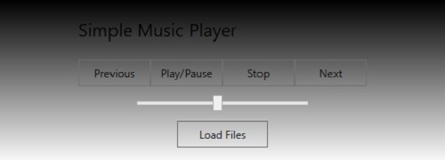
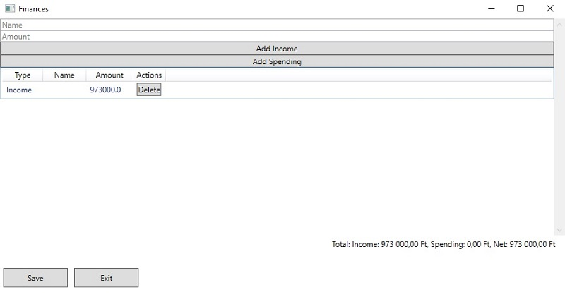
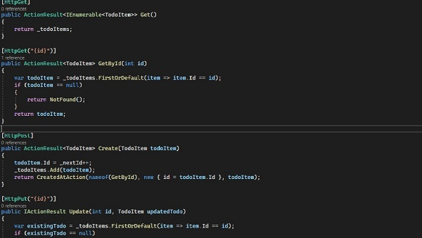

About me:
First and foremost: my wife is the most important loved one in the world to me. My dog is the second. They are the biggest part of my life and nothing can change that.
My original qualifications are as a Cad-Cam technician and Cnc operator, where precision and attention to detail were paramount. However, my journey took an exciting turn when I decided to delve into the world of coding.
Over the years, while working at various companies, I had the privilege of gaining insights into coding from friends who had formal education in programming. My curiosity about the world of coding grew and I embarked on a self-driven journey of learning and exploration.
This journey has been truly transformative. I initially immersed myself in C#, a versatile and powerful language, before venturing into the realm of Java. My curiosity didn't stop there; I delved into databases, honed my skills in HTML and CSS, and even dabbled in JavaScript.
What sets me apart is not only my ability to solve real-world challenges using coding but also my deep understanding and application of fundamental programming principles. I firmly grasp object-oriented programming (OOP) methodologies and concepts, allowing me to design modular, scalable, and maintainable solutions.
My commitment to writing clean, elegant, and maintainable code is unwavering. I firmly believe that clean code is not just a practice; it's a mindset that enhances collaboration, ensures readability, and minimizes technical debt.
Now, after successfully crafting desktop applications to solve workplace challenges, I stand at a pivotal juncture. It's time to channel my passion for coding into a fulfilling career where I can continue to learn, grow, and contribute meaningfully to innovative projects.
As I step forward in my coding journey, I am excited about the prospects of joining a team where I can leverage my skills, contribute to impactful projects, and keep refining my craft.
My current C# .NET knowledge includes:
My current Java knowledge includes:
My basic web development knowledge includes:
My familiarity with developer tools includes:
As a passionate and dedicated learner in the world of technology, I've acquired a diverse range of skills and knowledge that allow me to contribute effectively to modern software development. Some of my notable technical skills include:
Continuously updating my skills and staying abreast of emerging technologies, I am committed to furthering my expertise and contributing to impactful projects that push the boundaries of innovation.
Some of my projects so far:
This is a very simple music player desktop application I created using WPF. The program is fairly straightforward and its only function is to
load, play, pause and stop playing music tracks. Its has very low memory consumption which was the goal.
Finances app that tracks incomes and spendings and calculates their sum accordingly. Also saves data into a Json file.
Its far from an internet bank, but still quite usable.
Its my first try at building an API. Spent like an hour fixing errors here and there but finally Postman gave me proper
returned information about the Post call. It only stores in/retrieves data from memory, but a database is only a small step from here.
Phone number: +36202266014
E-mail: kjanos89@gmail.com